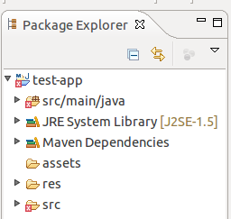

The Android Configurator is an Maven Integration for Eclipse (m2e) plug-in that adds maven support for Android Developer Tools (ADT) and the Maven Android Plugin. It brings the power of Maven dependency management into the ADT.
You will need Eclipse Helios or Indigo installed, as well as some additional Eclipse plug-ins. Instructions for installing these components can be found here:
*Maven Integration for Eclipse should already be installed in you're using Indigo.
Please Note: If you have an old, alpha 0.2.x version of the Android Connector installed you should un-install it before installing the latest 0.3.x beta versions.
If you already have an Android project please make sure you have created a POM for your project using version 3.0.0-alpha-2 or greater of the maven-android-plugin.
Then right-click on your project and select Configuration -> Convert to Maven Project.
If you are starting with a new project you can use the Maven Android archetypes to create Android projects completely within Eclipse:
Either way you should end up with an Eclipse project looking something like this:
Open your POM and click on the "Plugin execution not covered by lifecycle configuration" error. This will give you the option to Discover new m2e connectors.
Select this and you should be automatically prompted to download and install the Android Connector.
Once you have installed the Android Connector, your project should look something like this: